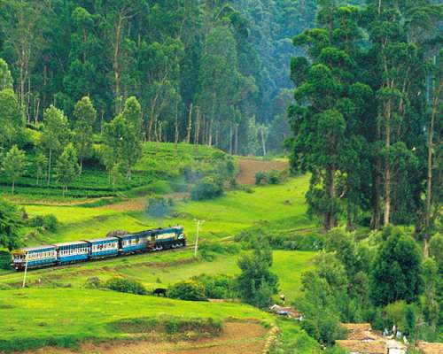

Ooty,the Queen of Hill stations,is a place with mesmerising meadows, soothing environment, cool weather and a wide array of sightseeing places to
visit and admire. Each tourist attraction in Ooty promises a unique and lively experience that will leave you in awe for many days to come.
How to reach there?
Ooty is located in the Nilgiris district of Tamil Nadu state. Aerodrome which is closest to Ooty is Coimbatore Airport
(approximately 85 kms away). Another way to reach Ooty is by train.Mettupalyam, 40 km from Ooty, is the nearest railhead
serving this hill station. Tamil Nadu State Road Transport Corporation (TNSTC) buses along with some private buses also connect Ooty.
Top things to do?
Known for its beautiful lakes, charming hill station environment, and magnificent architecture, Ooty is
visited by several holiday goers from all around the country. Maintained by the Horticultural Department of Tamil Nadu,
Botanical Gardens of Ooty is undeniably one of the most popular places to see in Ooty. Specifically if you love roses,
do visit Rose Garden.
One of the most important parts of every Ooty tour, Ooty lake is indeed a place to visit.
